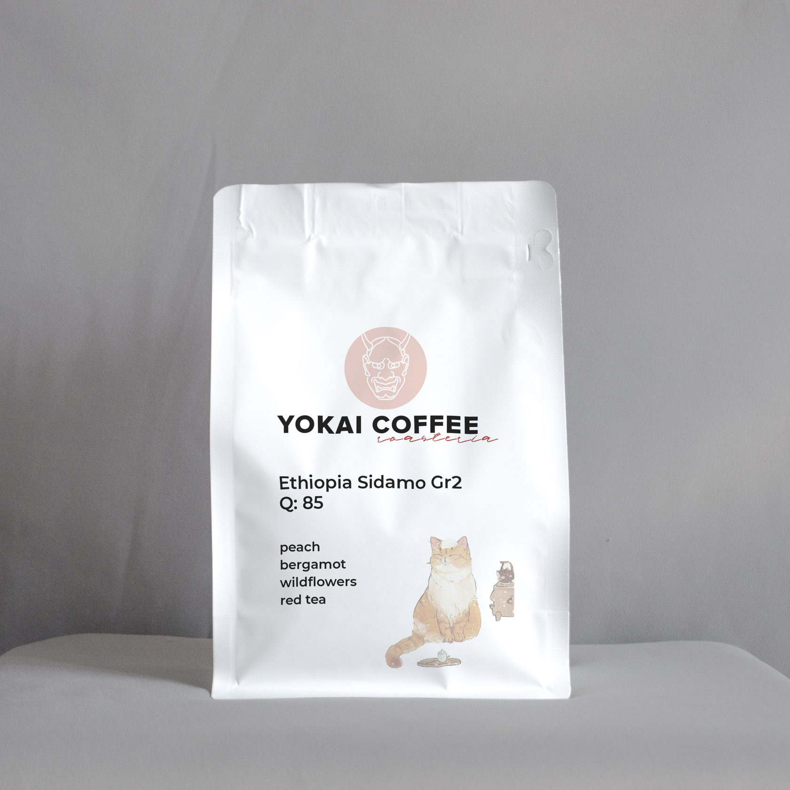
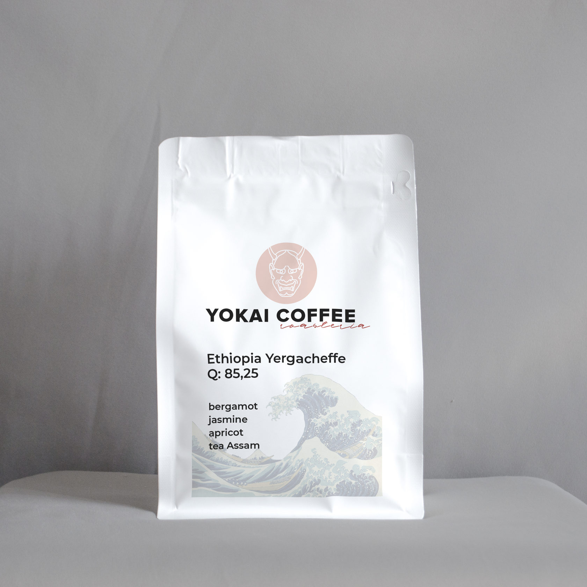
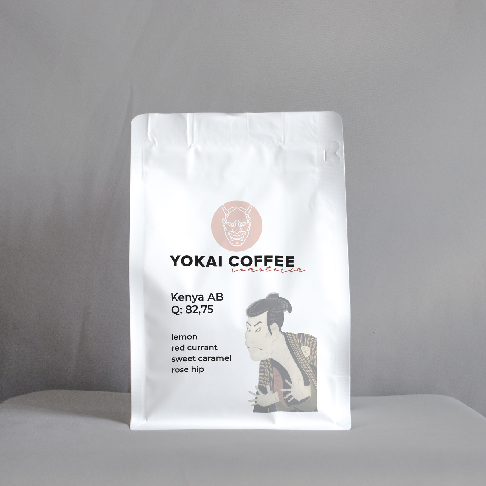
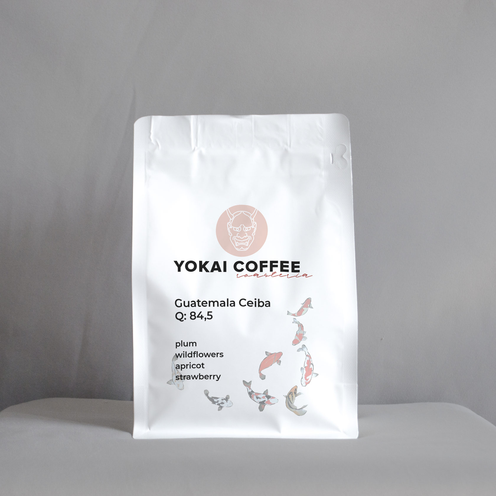
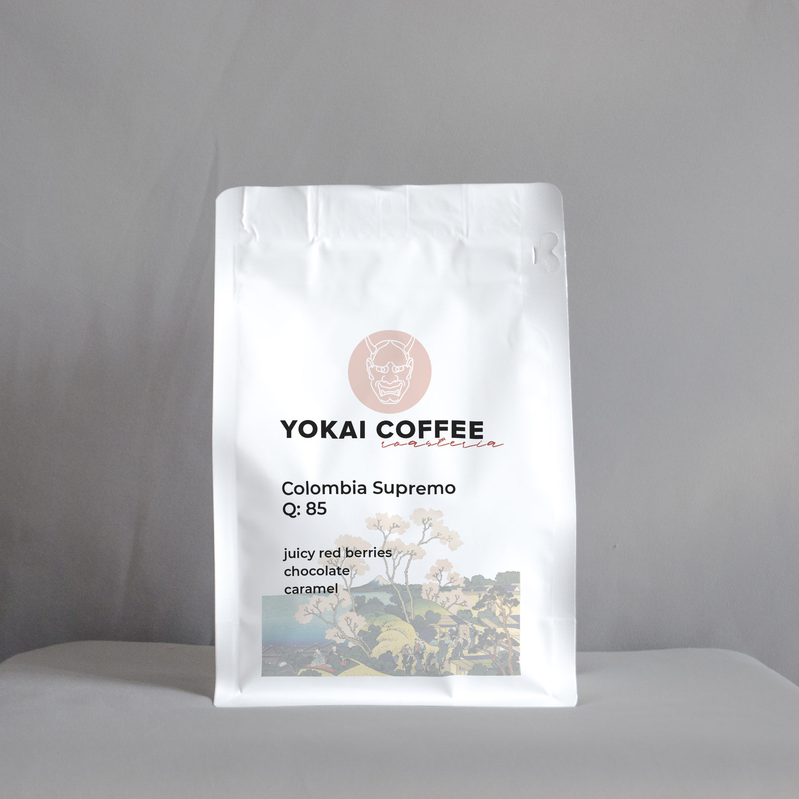
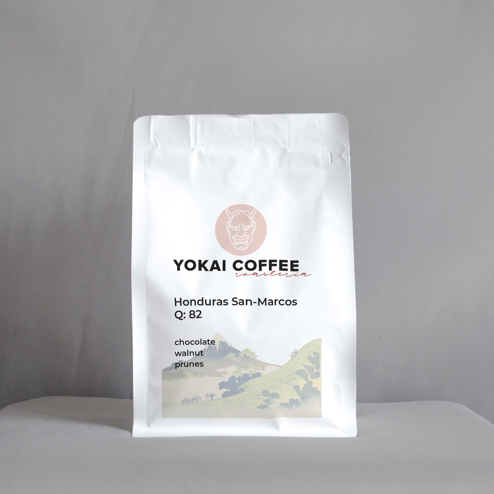
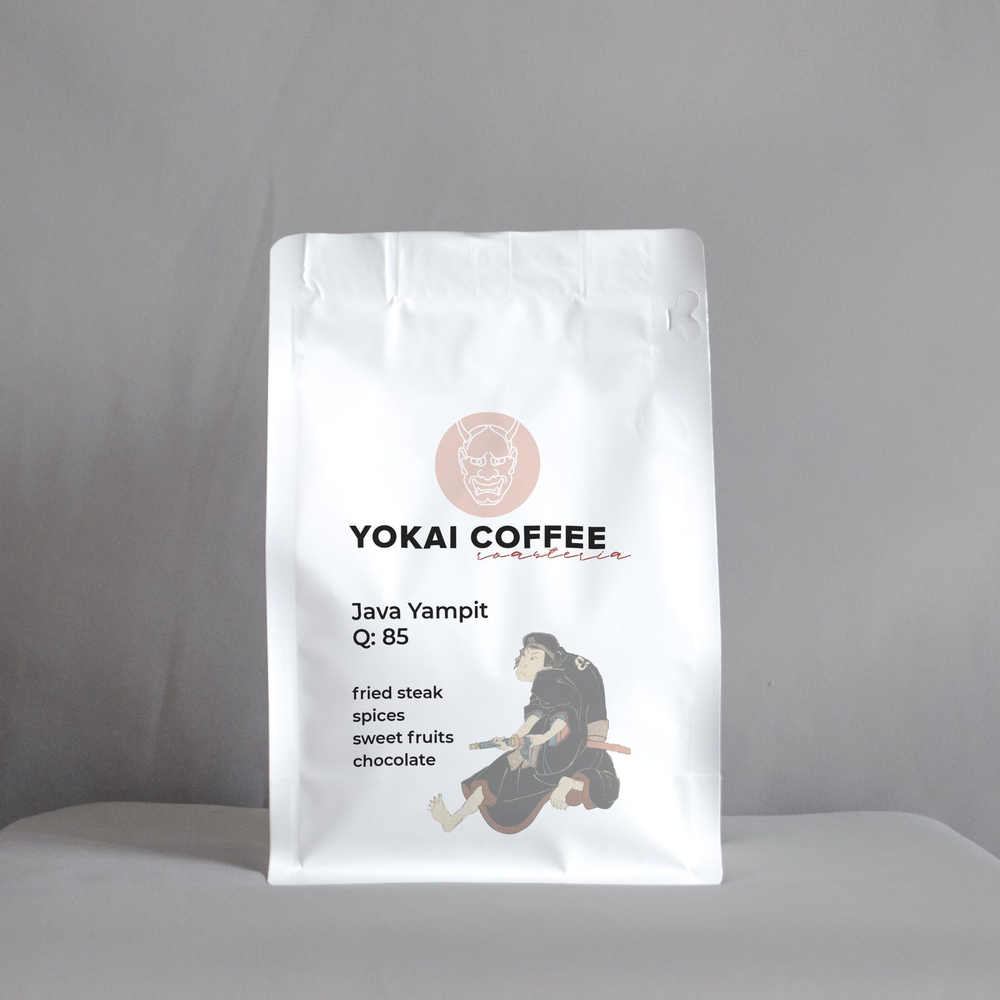
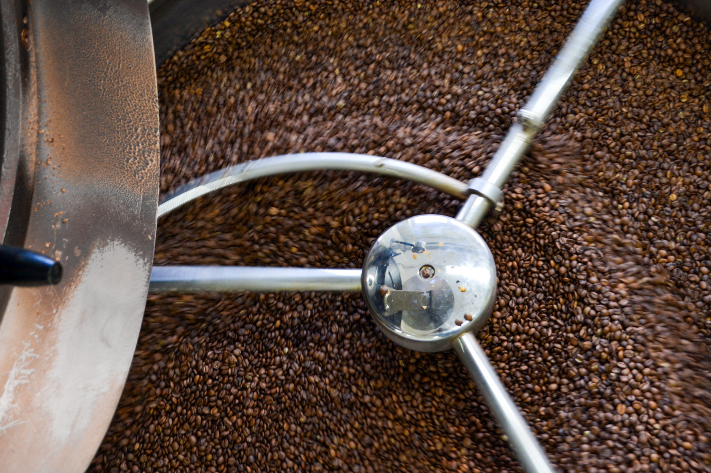
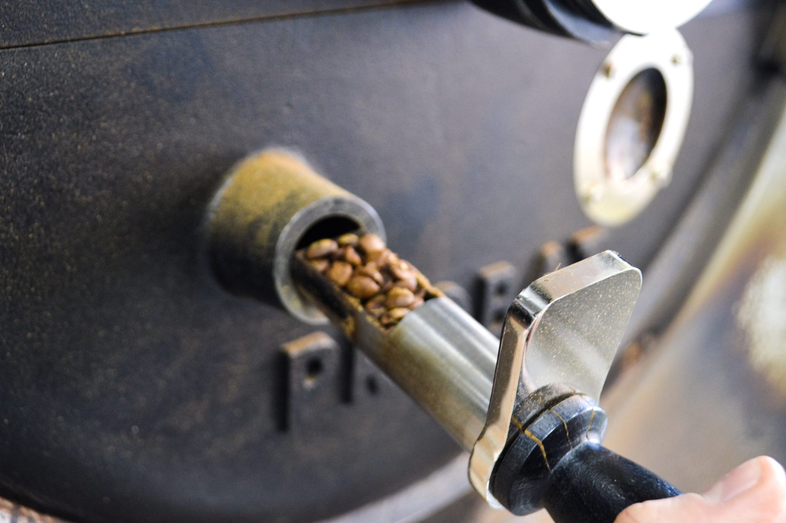

Внимание! Мы продлеваем бесплатную доставку по Санкт - Петербургу до конца июля.
Кофе
фильтр
эспрессо
limited edition
все
Чистый, питкий кофе. Читаемые и четкие дескриптеры при заваривании
в капельной кофеварке, V60, кемексе и прочих воронках.

Ethiopia Sidamo Gr 2
Во вкусе: полевые цветы, персик, бергамот и красный китайский чай.
Тело: среднее
Эфиопия Сидамо - цветочный кофе из Эфиопии.
Нам понравился этот кофе тем, что в нем цветочные
ноты сбалансированы сладкой нотой персика, что делает его особенно питким.
Кофе оценен поставщиком greencof в 85 баллов по системе SKA.
480 р.

Ethiopia Yergacheffe
Во вкусе: бергамот, жасмин, абрикос и чай ассам.
Тело: среднее, чуть ближе к легокому.
Классическая мытая Эфиопия.
Потенциал зерна позволил нам и раскрыть уникальный эфиопсикий терруар,
и получить чистую чашку, без пыли и угля во вкусе.
Кофе оценен поставщиком Greencof в 85,25 баллов по системе SKA.
520 р.

Kenya AB
Во вкусе: красные ягоды, лимон, сладкая карамель и цветы шиповника.
Тело: легкое.
Кенийский кофе славится яркой кислинкой и лимонными нотами.
В этом лоте они сбалансированы красными ягодами и цветами шиповника.
Кофе оценен поставщиком SFT_Trading в 82,75 баллов по системе SKA.
520 р.

Guatemala Ceiba
Во вкусе: слива, полевые цветы, абрикос, клубника.
Тело: среднее.
Редкий бриллиант Гватемалы.
Сложный и интересный кофе. Потенциал зерна позволяет играть со вкусом во время заваривания.
Кофе такого качества из Гватемалы - редкость, мы очень рады, что смогли поработать с этим лотом.
Кофе оценен поставщиком opencoffee в 84,75 баллов по системе SKA.
540 р.
Плотный, спокойный и понятный кофе. Полностью раскрывает потенциал
в эспрессо машине, гейзерной кофеварке и френч-прессе.

Colombia Supremo
Во вкусе: сочные красные ягоды и шоколад.
Тело: сливочное, выше среднего.
Сочный кофе под эспрессо. Достаточно яркий вкус красных ягод будет
чувствоваться даже в молочных напитках на основе эспрессо.
Кофе оценен поставщиком SFT_Treading в 85 баллов по системе SKA.
350 р.

Honduras San-Marcos
Во вкусе: шоколад, грецкий орех, чернослив.
Тело: плотное, выше среднего.
Плотный кофе для эспрессо и напитков на его основе.
Универсальный кофе, хорош и в чистом виде и с молоком.
Кофе оценен поставщиком greencof в 82 баллов по системе SKA.
320 р.
Кофе, который нас удивил.

Java Yampit
Во вкусе: жареный стейк, специи, сладкие фрукты и шоколад.
Тело: плотное, выше среднего.
Обжарка: подойдет и для эспрессо,
и для альтернативных методов заваривания.
Кофе, который удивляет.
Необычный вкусовой профиль, чистота и питкость не свойственные
кофе из этого региона.
Кофе оценен поставщиком SFT_Treading в 85 баллов по системе SKA.
В своей работе мы вдохновлялись японскими мастерами
и их подходом к своему ремеслу.
Для человека такой культуры, вся природа в той или иной степени одушевлена.
Все явления и вещи воспринимаются как живые сущности.
Они могут как помогать человеку, так и осыпать несчастьями.
Даже самый невзрачный на вид предмет — «живой».
Существует лишь большая или меньшая степень одушевленности.


Поэтому даже на первый взгляд приземленные действия,
будь то возделывание полей или заваривание кофе, являются своего рода ритуалом.
А любой ритуал требует трепетного отношения, ведь мы общаемся с духом предмета.
Ёкай сорванной кофейной ягоды должен быть уважен, иначе беды не миновать.
Наше отношение к продукту очень схоже с японским.
Мы бережно, даже ритуально, подходим к работе
с кофейным зерном.
Применяем весь опыт и знания, чтобы на выходе получилась вкусная чашка, заслуживающая внимания.
Задача, которую ставим перед собой:
порадовать вас - наших покупателей.
И пусть в вашем доме живут только добрые духи!
Доставка
Бесплатная доставка
Продлеваем бесплатную доставку
в пределах Санкт-Петербурга до конца июля!
✕
Ethiopia Yergacheffe
520 р.
Количество пачек
Помол
1
1
1
0
✕
Ваш заказ:
Сумма: 0 р.
Оплата временно осуществляется только при получении картой или наличными.